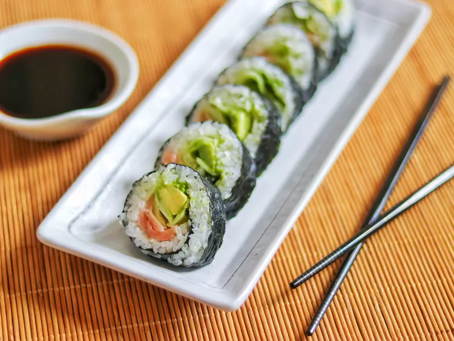

Smoked Salmon Sushi Roll
Document

Description:
A Smoked Salmon Sushi Roll is a delightful Japanese dish that combines the freshness of sushi rice, the creaminess of avocado, the crunch of cucumber, and the smoky flavor of smoked salmon, all wrapped in nori seaweed and served with soy sauce and wasabi.
Ingredients:
- Sushi rice
- Nori seaweed sheets
- Smoked salmon slices
- Avocado, sliced
- Cucumber, julienned
- Rice vinegar
- Sugar
- Salt
- Soy sauce
- Wasabi
- Pickled ginger (optional, for serving)
Steps:
Prepare the sushi rice:
- Cook sushi rice according to package instructions. Once cooked, season it with a mixture of rice vinegar, sugar, and salt while it's still warm. Let it cool to room temperature.
Prepare the ingredients:
- Slice the avocado, julienne the cucumber, and have the smoked salmon ready for assembly.
Assemble the sushi roll:
- Place a sheet of nori on a bamboo sushi rolling mat.
- Wet your hands and spread a thin layer of sushi rice over the nori, leaving a small border at the top.
- Arrange slices of avocado, cucumber, and smoked salmon along the center of the rice.
Roll the sushi:
- Using the bamboo mat, tightly roll the sushi from the bottom, using gentle pressure to shape it into a cylinder.
- Seal the edge of the nori by moistening it slightly with water.
Slice the roll:
- With a sharp knife, slice the sushi roll into equal-sized pieces. Wet the knife between cuts to prevent sticking.
Serve and enjoy:
- Serve the smoked salmon sushi rolls with soy sauce, wasabi, and pickled ginger on the side.